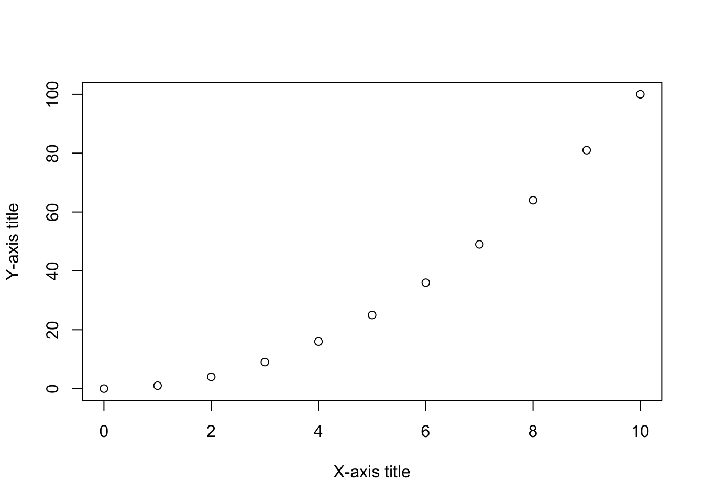
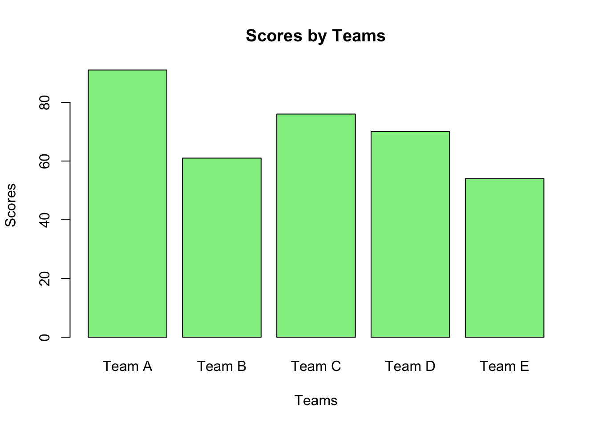

Chapter 2 Introduction to R Programming
2.0.1 What is it?
R is a programming language widely used especially in data science. It is possible to do data mining, data processing, statistical programming and machine learning with it. It is a leading language, especially among researchers in natural or social sciences.
2.0.2 Why R?
Completely free and open source
Open science and scientific reproducibility
Customized analyses
2.0.3 How will we code?
Throughout the workshop, we will use RStudio by Posit, which is the most popular IDE for R. There are also other options like RStudio Cloud or Google Colab that allow you to write code in your web browser.
2.0.4 Cheat sheets
Base R:
https://iqss.github.io/dss-workshops/R/Rintro/base-r-cheat-sheet.pdf
Data manipulation with tidyverse:
https://www.rstudio.com/wp-content/uploads/2015/02/data-wrangling-cheatsheet.pdf
Introduction book:
Turkish cheat sheets:
https://github.com/rstudio/cheatsheets/blob/main/translations/turkish/base-r_tr.pdf https://github.com/rstudio/cheatsheets/blob/main/translations/turkish/data-transformation_tr.pdf https://github.com/rstudio/cheatsheets/blob/main/translations/turkish/data-visualization_tr.pdf
Also see DataCamp!
2.2 Functions in R
In R, instead of using mathematical operators like this, we will primarily use “functions” that allow us to perform various tasks. Each function takes specific arguments. Arguments are the inputs to the function, i.e., the objects on which the function operates. Some of these arguments may be required to be explicitly specified. If a function requires multiple arguments, the arguments are separated by commas.
Functions are a way to package up and reuse code.
The function below is called “add_two” and it adds two to any number you give it.
Now we can use the function we just created.
## [1] 5Other functions are built into R. For example, the “log” function computes the natural logarithm.
## [1] 2.302585## [1] 2## [1] 2You can also use functions inside other functions.
## [1] 0.69314722.3 Variables in R
A variable in a computer’s memory can be any object that is defined. We can give it any name and value we want. The computer stores the values we assign to variables in memory, and later, we can access the values within that variable.
In R, we assign variables using the <- operator.
# this code will not produce any output but will assign the value 100 to the variable 'var'
var <- (2*5)^2
# if we want to see the value of the variable, we can just type the name of the variable or print it to the console
var## [1] 100## [1] 1002.3.2 Logical operators
Using the <, >, <=, >=, ==, !=, |, and & operators, we can perform comparisons between two variables. As a result, these operators will give us either TRUE, meaning the comparison is true, or FALSE, meaning the comparison is false.
## [1] TRUE## [1] TRUE## [1] FALSE## [1] TRUE## [1] FALSE## [1] TRUE## [1] TRUE## [1] FALSENote: You can always get help about a specific function or operator by using the help() command.
2.4 Data types in R
In R, values can have different types. The main data types include integer, double (for real numbers), character, and logical. You can use the typeof() function to determine the data type of a variable.
Here’s an example:
## [1] "integer"## [1] "double"## [1] "character"## [1] "logical"2.4.1 Vectors
2.4.1.1 Numeric vectors
A vector is a collection of values of the same type. We can create a vector using the c() function. The c() function takes any number of arguments and combines them into a vector.
## [1] 1 2 3 4 5## [1] 5## [1] 5 6 7 8 9 10 11 12 13 14 15 16 17 18 19 20 21 22 23 24 25 26 27 28 29 30 31 32
## [29] 33 34 35 36 37 38 39 40 41 42 43 44 45 46 47 48 49 50 51 52 53 54 55 56 57 58 59 60
## [57] 61 62 63 64 65 66 67 68 69 70 71 72 73 74 75 76 77 78 79 80 81 82 83 84 85 86 87 88
## [85] 89 90## [1] 5 7 9 11 13 15 17 19 21 23 25 27 29 31 33 35 37 39 41 43 45 47 49 51 53 55 57 59
## [29] 61 63 65 67 69 71 73 75 77 79 81 83 85 87 89## [1] 1 4 7 10 1 4 7 10 1 4 7 10 1 4 7 10 1 4 7 10Some functions that you can use with numeric vectors:
## [1] 15## [1] 3## [1] 5## [1] 1## [1] 1 2 3 4 5## [1] 5 4 3 2 1## [1] 1.581139## [1] 32.4.1.3 Indexing vectors:
## [1] 7## [1] 8 9 10 11 12 13## [1] 7 9 11 13## [1] 8 9 10 11 12 13 14 15 16 17 18 19 20 21## [1] 10 11 12 13 14 15 16 17 18 19 20 212.4.1.4 Logical vectors
Logical vectors are vectors that contain TRUE and FALSE values. You can create logical vectors using the c() function.
# create a logical vector
logical_vector <- c(TRUE, FALSE, TRUE, FALSE, TRUE)
# operators like <, >, <=, >=, ==, !=, |, and & can be used to create logical vectors
new_vector <- 1:8
new_vector < 3## [1] TRUE TRUE FALSE FALSE FALSE FALSE FALSE FALSE## [1] FALSE FALSE FALSE FALSE FALSE FALSE TRUE FALSE## [1] TRUE TRUE TRUE TRUE TRUE TRUE TRUE TRUE2.4.1.5 Filtering vectors:
# you can use logical vectors to filter other vectors
new_vector[new_vector < 3] # returns all values in new_vector that are smaller than 3## [1] 1 2## [1] 72.4.1.6 Character vectors
Character vectors are vectors that contain strings. You can create character vectors using the c() function.
# create a character vector
character_vector <- c("hello", "learning", "R", "is", "cool")
print(character_vector)## [1] "hello" "learning" "R" "is" "cool"# you can use the nchar() function to get the number of characters in each string
nchar(character_vector)## [1] 5 8 1 2 4# you can use the paste() function to concatenate strings
paste("hello", "learning", "R", "is", "cool")## [1] "hello learning R is cool"# you can use the strsplit() function to split a string into a vector of substrings
strsplit("hello learning R is cool", " ")## [[1]]
## [1] "hello" "learning" "R" "is" "cool"2.4.2 Data frames
Data frames are used to store tabular data. You can create a data frame using the data.frame() function.
# create a data frame
df <- data.frame(
age = c(55, 95, 67, 89, 24),
height = c(1.78, 1.65, 1.90, 1.45, 1.67)
)
print(df)## age height
## 1 55 1.78
## 2 95 1.65
## 3 67 1.90
## 4 89 1.45
## 5 24 1.67## [1] 55 95 67 89 24## age
## 1 55
## 2 95
## 3 67
## 4 89
## 5 24There are some in-built datasets in R like state.x77. You can use
data() to view other available datasets in R.
This is a matrix with 50 rows and 8 columns giving the following statistics in the respective columns.
Population: population estimate as of July 1, 1975.
Income: per capita income (1974)
Illiteracy: illiteracy (1970, percent of population)
Life Exp: life expectancy in years (1969-71)
Murder: murder and non-negligent manslaughter rate per 100,000 population (1976)
HS Grad: percent high-school graduates (1970)
Frost: mean number of days with minimum temperature below freezing (1931-1960) in capital or large city
Area: land area in square miles
Source: U.S. Department of Commerce, Bureau of the Census (1977) Statistical Abstract of the United States, and U.S. Department of Commerce, Bureau of the Census (1977) County and City Data Book.
# save the dataset to a variable as a dataframe object in R
df <- as.data.frame(state.x77)
# view the df:
#View(state.x77)
head(state.x77) ## Population Income Illiteracy Life Exp Murder HS Grad Frost Area
## Alabama 3615 3624 2.1 69.05 15.1 41.3 20 50708
## Alaska 365 6315 1.5 69.31 11.3 66.7 152 566432
## Arizona 2212 4530 1.8 70.55 7.8 58.1 15 113417
## Arkansas 2110 3378 1.9 70.66 10.1 39.9 65 51945
## California 21198 5114 1.1 71.71 10.3 62.6 20 156361
## Colorado 2541 4884 0.7 72.06 6.8 63.9 166 103766## Population Income Illiteracy Life Exp Murder HS Grad Frost Area
## Vermont 472 3907 0.6 71.64 5.5 57.1 168 9267
## Virginia 4981 4701 1.4 70.08 9.5 47.8 85 39780
## Washington 3559 4864 0.6 71.72 4.3 63.5 32 66570
## West Virginia 1799 3617 1.4 69.48 6.7 41.6 100 24070
## Wisconsin 4589 4468 0.7 72.48 3.0 54.5 149 54464
## Wyoming 376 4566 0.6 70.29 6.9 62.9 173 97203## 'data.frame': 50 obs. of 8 variables:
## $ Population: num 3615 365 2212 2110 21198 ...
## $ Income : num 3624 6315 4530 3378 5114 ...
## $ Illiteracy: num 2.1 1.5 1.8 1.9 1.1 0.7 1.1 0.9 1.3 2 ...
## $ Life Exp : num 69 69.3 70.5 70.7 71.7 ...
## $ Murder : num 15.1 11.3 7.8 10.1 10.3 6.8 3.1 6.2 10.7 13.9 ...
## $ HS Grad : num 41.3 66.7 58.1 39.9 62.6 63.9 56 54.6 52.6 40.6 ...
## $ Frost : num 20 152 15 65 20 166 139 103 11 60 ...
## $ Area : num 50708 566432 113417 51945 156361 ...## Population Income Illiteracy Life Exp Murder
## Min. : 365 Min. :3098 Min. :0.500 Min. :67.96 Min. : 1.400
## 1st Qu.: 1080 1st Qu.:3993 1st Qu.:0.625 1st Qu.:70.12 1st Qu.: 4.350
## Median : 2838 Median :4519 Median :0.950 Median :70.67 Median : 6.850
## Mean : 4246 Mean :4436 Mean :1.170 Mean :70.88 Mean : 7.378
## 3rd Qu.: 4968 3rd Qu.:4814 3rd Qu.:1.575 3rd Qu.:71.89 3rd Qu.:10.675
## Max. :21198 Max. :6315 Max. :2.800 Max. :73.60 Max. :15.100
## HS Grad Frost Area
## Min. :37.80 Min. : 0.00 Min. : 1049
## 1st Qu.:48.05 1st Qu.: 66.25 1st Qu.: 36985
## Median :53.25 Median :114.50 Median : 54277
## Mean :53.11 Mean :104.46 Mean : 70736
## 3rd Qu.:59.15 3rd Qu.:139.75 3rd Qu.: 81162
## Max. :67.30 Max. :188.00 Max. :566432## [1] 50 82.5 Quick visualization
Let’s create some dummy data and visualize it.
x <- 0:10
y <- x^2
# you can use the plot() function to create a scatter plot
plot(x, y,
xlab = "X-axis title",
ylab = "Y-axis title")
# simulate different data
teams <- c("Team A", "Team B", "Team C", "Team D", "Team E") # generating team names
scores <- sample(50:100, length(teams)) # generating the scores for each team
# bar plot
barplot(scores,
main = "Scores by Teams",
xlab = "Teams",
ylab = "Scores",
col = "lightgreen",
border = "black",
names.arg = teams)
We will learn later how to create more advanced visualizations using the ggplot2 package.
2.6 In-Class Exercises
2.6.1 Exercise 1
Today is Monday. What day of the week will it be 9, 54, 306, and 8999 days from now?
Note: Create a character vector containing the days of the week and repeat this vector 9000 times. Then, use indexing to find the desired day. Hint: Write the days of the week in the character vector starting from Tuesday.
2.7 Practice questions for next week
Q1: Create a vector containing 50 random numbers with a normal
(Gaussian) distribution, mean 20 and standard deviation 2. You can do
this with the rnorm() function. Then assigns the numbers to a variable
and use that variable as an argument to the sample() function to
randomly select 10 samples from that vector. Run ?rnorm() ?sample()
to see how the functions work and what arguments they take.
Q2: Download and load “LearnBayes” package and take a look at the first few columns of the data set called “studentdata”.
Answer the following questions:
3.1. Remove rows that include NA observations.
3.2. Get the number of female students.
3.3. Number of students who are taller than 180 cm (tip: the height is given in inches. please first turn them to cm by multiplying the observations with 2.54)
3.4. Plot the relationship between height and sex in a line graph.